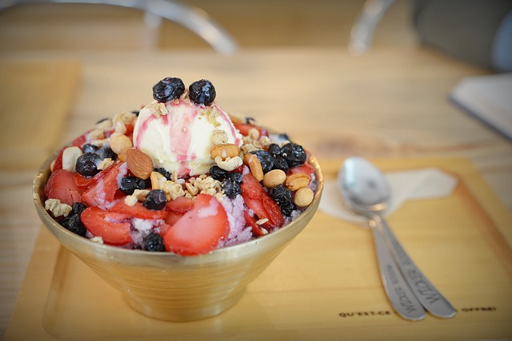

초기 형태의 빙수는 갈아만든 얼음, 그리고 팥, 떡, 땅콩 분말 등의 2~3개의 재료로 이루어졌다.[2] 최초 형태의 빙수는 조선시대(1392~1910년)에 존재하였다. 정부 기록에 따르면 관료들은 얼음을 갈아서 그 위에 다양한 과일을 얹은 다음 나누어 먹었다.[3
초기 형태의 빙수는 갈아만든 얼음, 그리고 팥, 떡, 땅콩 분말 등의 2~3개의 재료로 이루어졌다.[2] 최초 형태의 빙수는 조선시대(1392~1910년)에 존재하였다. 정부 기록에 따르면 관료들은 얼음을 갈아서 그 위에 다양한 과일을 얹은 다음 나누어 먹었다.[3
현대적 형태의 팥빙수는 팥을 주로 하는 차가운 요리의 도입과 함께 일제강점기 기간(1910~1945년) 중에 기원하였다.[3][4] 갈아넣은 얼음과 팥의 조합은 한국에서 발명된 것이다.[5] 한국 전쟁(1950~1953년) 중에 외국 문물의 영향을 받아 과일 칵테일, 아이스크림,[6] 과일, 견과류, 시리얼, 시럽, 크림이 포함되었다.[5] 1970년대와 1980년대에 과일 칵테일, 크림, 마라스키노 체리 등의 재료가 인기를 끌었다.[6]